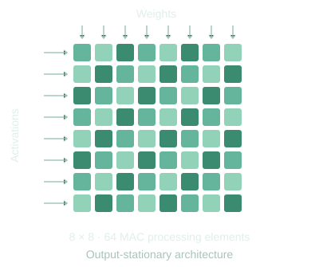
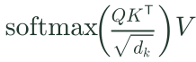
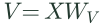
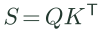
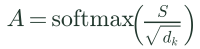

Feed the operands
The input is projected into queries (Q), keys (K), and values (V). Multiplying Q by Kᵀ then produces the attention scores. These operations use the same matrix-multiply engine.
Watch: operands enter from the left and top.
DIGITAL DESIGN & VERIFICATION · 2026
SystemVerilog design and UVM verification on a Basys 3 FPGA.
Designed and verified a TPU-style transformer inference accelerator on a Basys 3 (Artix-7) FPGA. The system offloads attention layers of a trained neural network to hardware over a UART host interface.

PROJECT VIDEO
I documented the design and explained how the accelerator works in a YouTube video.
100k+ viewsin its first week
ARCHITECTURE WALKTHROUGH
The FPGA handles the attention computation. The host sends data over UART, the same compute array performs the matrix products, and a lookup-based softmax turns scores into attention weights.

For one attention layer, X contains 16 tokens with 64 features each. It combines the input embeddings with positional encoding. The learned projection matrices are 64 × 64, and dk = 64.
| Step | Operation | Input shapes → output shape |
|---|---|---|
| Queries | (16 × 64) · (64 × 64) → 16 × 64 | |
| Keys | (16 × 64) · (64 × 64) → 16 × 64 | |
| Values |  | (16 × 64) · (64 × 64) → 16 × 64 |
| Scores |  | (16 × 64) · (64 × 16) → 16 × 16 |
| Attention weights |  | 16 × 16 → 16 × 16 · row-wise |
| Value mixing | (16 × 16) · (16 × 64) → 16 × 64 | |
| Output projection | (16 × 64) · (64 × 64) → 16 × 64 |
Softmax normalizes each score row into attention weights. Those weights mix the value vectors before the final output projection. Matrix products are processed as 8 × 8 tiles on the same array.
Scroll to follow the data. Each diagram advances with the explanation.
Skip to verification ↓01 / COMPUTE ARRAY
The input is projected into queries (Q), keys (K), and values (V). Multiplying Q by Kᵀ then produces the attention scores. These operations use the same matrix-multiply engine.
Watch: operands enter from the left and top.
Each processing element multiplies a pair of operands and adds the product to its running total. Inputs move to neighboring cells; the partial sum stays in place.
Output-stationary: the sum stays in its processing element.
As the final operands pass through, each cell finishes one output value. My implementation has 64 multiply–accumulate processing elements arranged in an 8 × 8 array.
The small example shows the same dataflow as the hardware.
02 / TILING CONTROLLER
A matrix can be larger than the physical array. The controller divides the operands into tiles, then walks through row, column, and depth positions.
The hardware supports matrix multiplication up to 64 × 64.
Each output tile accumulates contributions across the depth dimension. The tile schedule reuses the compute array instead of requiring a larger grid of processing elements. The design also uses double buffering for tile data.
Shown: a 16 × 64 by 64 × 64 example, with 128 tile-pair operations.
03 / LOOKUP-BASED SOFTMAX
After the score scaling step, softmax needs an exponential for each score. Precomputed values replace calculating the exponential from scratch in hardware.
Shown: an illustrative input maps to a stored exponential value.
The exponentials in one score row are added together. That sum is the denominator used to normalize every value in the row.
Follow the values into the adder: 1 + 2 + 3 + 4 = 10.
The exponential and the row sum select a value from a two-dimensional table. This approximates division and produces the normalized attention weight.
Illustrative example: 4 ÷ 10 ≈ 0.397 after quantization.
04 / FINISH THE ATTENTION OPERATION
The normalized attention weights determine how the value vectors are mixed. The matrix engine computes attention × V and the output projection, then the result travels back to the host over UART.
Attention weights × VOutput projectionUART → host
VERIFICATION
A fixed-point datapath can produce plausible-looking values and still be wrong. I built a UVM environment to compare the accelerator’s outputs with a golden reference model, alongside a separate evaluation of the softmax approximation.
The testbench includes a UVM agent, sequencer, driver, monitor, scoreboard, constrained-random stimulus, and functional coverage.
Constrained-random sequences supply stimulus. The sequencer and driver apply transactions to the RTL.
The monitor captures the hardware response. The scoreboard checks it against the golden reference to expose datapath and fixed-point errors.
Functional coverage records the cases exercised by the tests, alongside the scoreboard’s correctness checks.